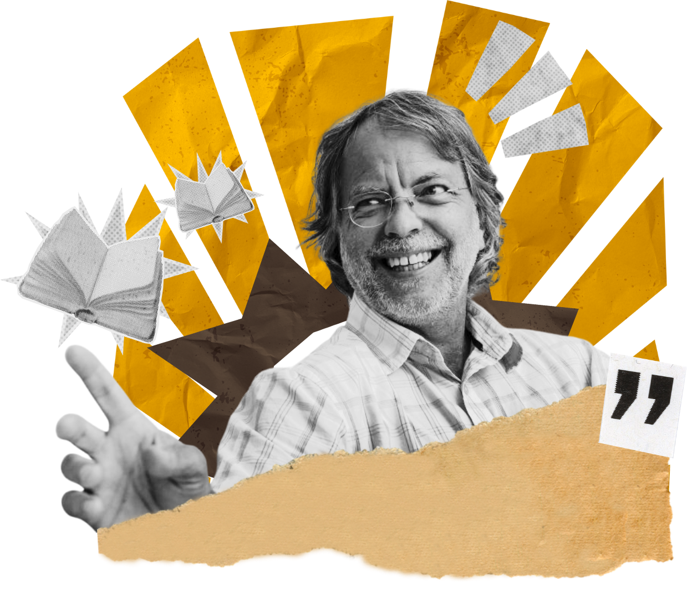
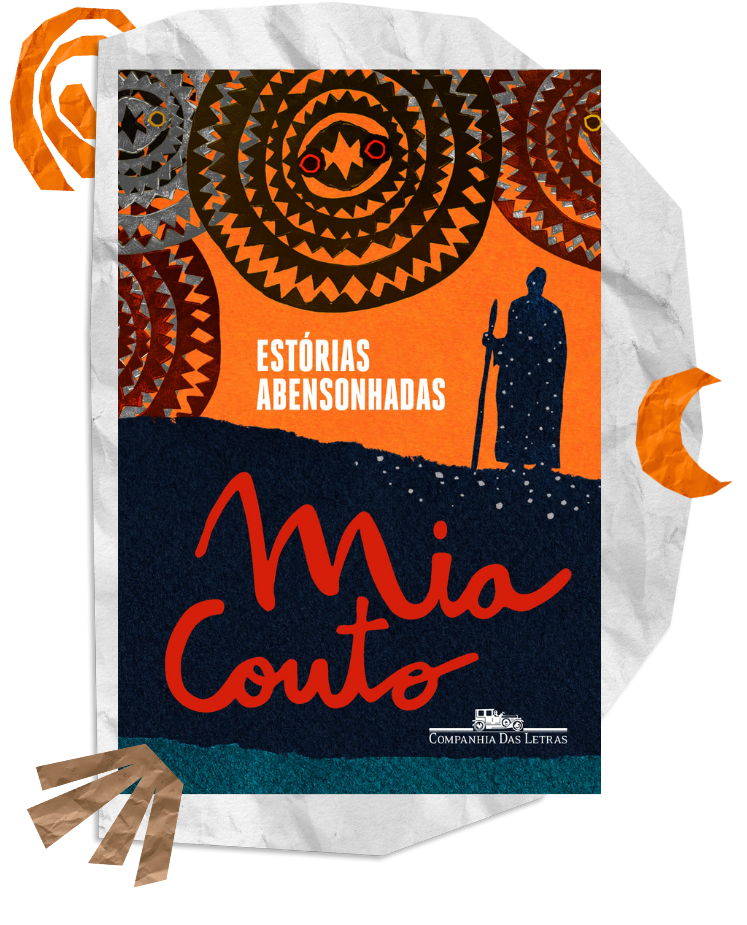
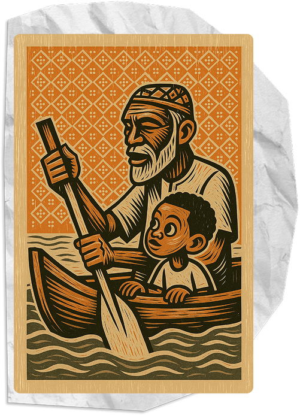
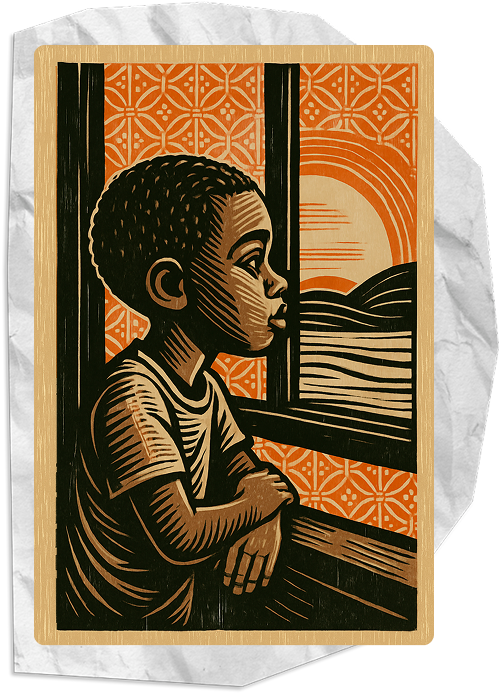
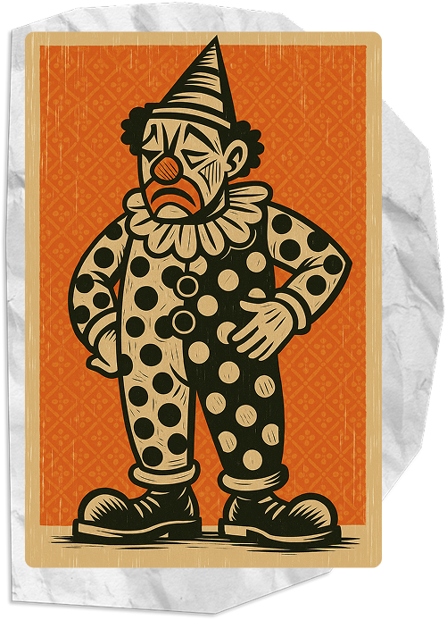
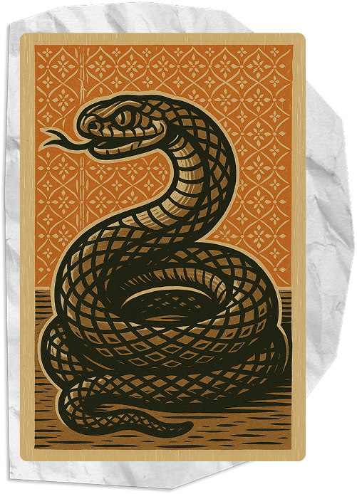

Descubra o universo mágico de Mia Couto e do livro “Estórias Abensonhadas”.
Confira o site oficial do autor

Publicado em 1994, Estórias Abensonhadas é um livro de Mia Couto com 26 contos que misturam realidade e fantasia com um enredo de pós-guerra em Moçambique.
Com uma linguagem poética e marcada por neologismos, os contos abordam temas como esperança, memória, infância e reconstrução.
Mesmo com o passado recente de guerra como pano de fundo, os contos são carregados de encantamento.
Clique na seta para abrir ou fechar a resenha:
Neste conto, Mia Couto nos apresenta um neto e seu avô navegando juntos até um lago “proibido”. A travessia simboliza mais do que um passeio: trata-se de uma jornada iniciática onde o tempo, a memória e a ancestralidade se entrelaçam. A água surge como elo entre gerações e espaço onde o passado não se perde, apenas muda de forma. No lago, o avô vê panos brancos que acenam do outro lado da margem, provavelmente sinalizando a morte ou a travessia final. Ainda assim, o tom do conto é delicado, poético e quase místico. Ao final, o avô desaparece como que “absorvido” pelo próprio tempo. É um conto sobre herança afetiva e a forma como os mais velhos nos moldam, mesmo quando partem.

Esse conto é puro sentimento. Depois de muito tempo sem chover, a água finalmente volta e não é só a terra que precisa dela, mas também as pessoas. A tia do narrador é quem dá sentido à chuva: ela diz que é uma “chuva abensonhada”, uma bênção que vem de longe, como um presente dos que já se foram. A chuva aqui tem um peso simbólico muito grande. Ela limpa, renova, cura. É como se lavasse tudo de ruim que a guerra deixou. Ao mesmo tempo, o narrador mostra um certo medo da chuva, talvez porque já estava acostumado com a dor e o sofrimento. Mas a tia, com sua sabedoria, mostra que é hora de recomeçar.

Este conto é uma poderosa fábula política e satírica. Dois palhaços, que simbolizam líderes de facções em guerra, manipulam populações inteiras para lutar e morrer em nome de suas causas vazias. Ao final, mesmo com tantas mortes, os palhaços se reconciliam e partem para outra cidade, onde tudo recomeça. A crítica é clara: são os líderes que iniciam guerras, mas é o povo quem morre por elas. A guerra é retratada como espetáculo absurdo. Um circo onde se mata por nada, com riso forçado e gestos coreografados. A “palhaçada” da política, da guerra e do poder revela-se cruel, impiedosa e, acima de tudo, repetitiva.

Nesse conto, um filho vai visitar o pai doente e encontra uma cena estranha: o pai está sendo "tomado" por uma serpente. Mas a serpente é simbólica, representa tudo o que o pai guardou por dentro, talvez mágoas, segredos ou culpas que o foram consumindo ao longo da vida. Mesmo assim, o filho não recua. Ele se aproxima, toca, abraça. É um gesto simples, mas cheio de significado. O conto fala de reconciliação, de amor mesmo quando já quase não se reconhece mais a pessoa que se ama. É forte e delicado ao mesmo tempo.
